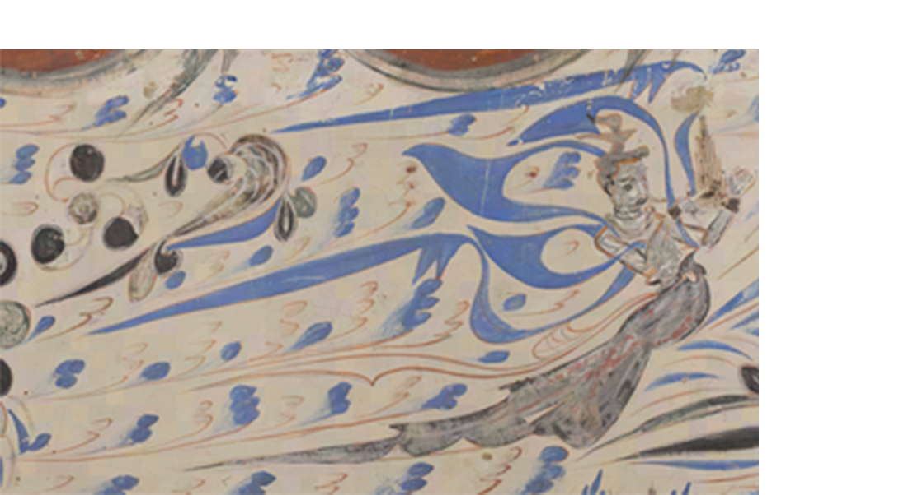
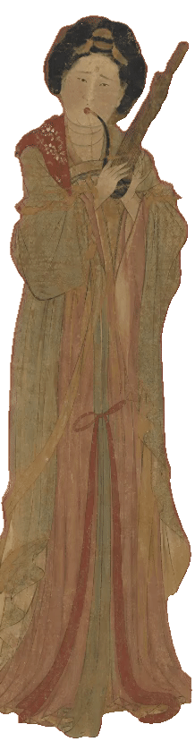

Observing Phenomena · Evolution
观象·演变
商
初现雏形
笙是我国古老的簧管乐器，能奏和声。据传女娲发明了笙簧，用竹管和葫芦制成。笙是世界上最早使用自由簧的古老乐器，具有吹吸皆鸣的特点。
商代已有笙的雏形，主要用于祭祀和礼乐场合。《诗经》《周礼》等文献中有关于笙的记载。西周时期笙发展为匏类乐器，形制和音律得到规范。

《三才图会·器用卷》 — 最早将女娲与笙簧画在一起的图像
Observing Phenomena · Evolution
观象·演变

唐
进入繁盛
唐代笙得到空前发展，出现多种形制和演奏名家。燕乐中大量使用笙，笙在宫廷乐队和民间演奏中皆有广泛应用。
目前已知最早的笙实物为曾侯乙墓出土的14管笙，距今已有2400余年历史。其制作工艺精湛，管身排列有序，簧片结构完整。唐代笙在此基础上继续发展，形制更加多样。

敦煌壁画 — 唐代笙在燕乐中的演奏场景
Observing Phenomena · Evolution
观象·演变
明
十三簧成
明代笙发展为十三簧，音域大幅扩展，表现力显著增强。十三簧的配置使笙能够演奏更加复杂的旋律与丰富的和声。
《明会典》《乐律全书》等典籍详细记录了笙的形制与演奏规范。各地形成了不同风格的制笙流派，笙的形制逐渐定型，为现代笙的发展奠定了坚实基础。

明代宫廷绘画 — 十三簧笙形制成熟、音域完备